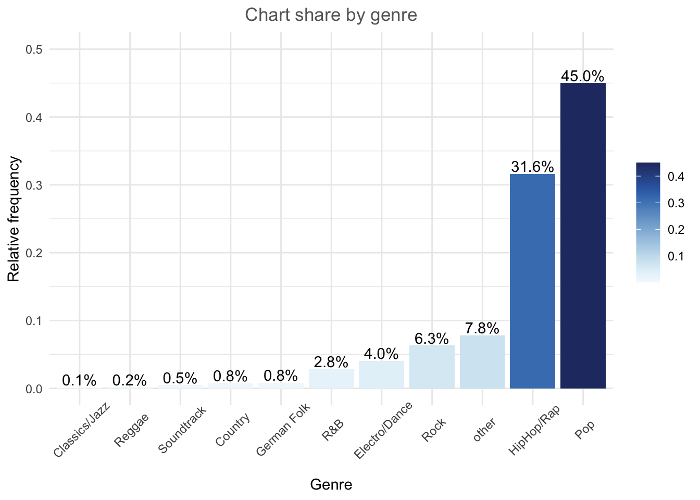
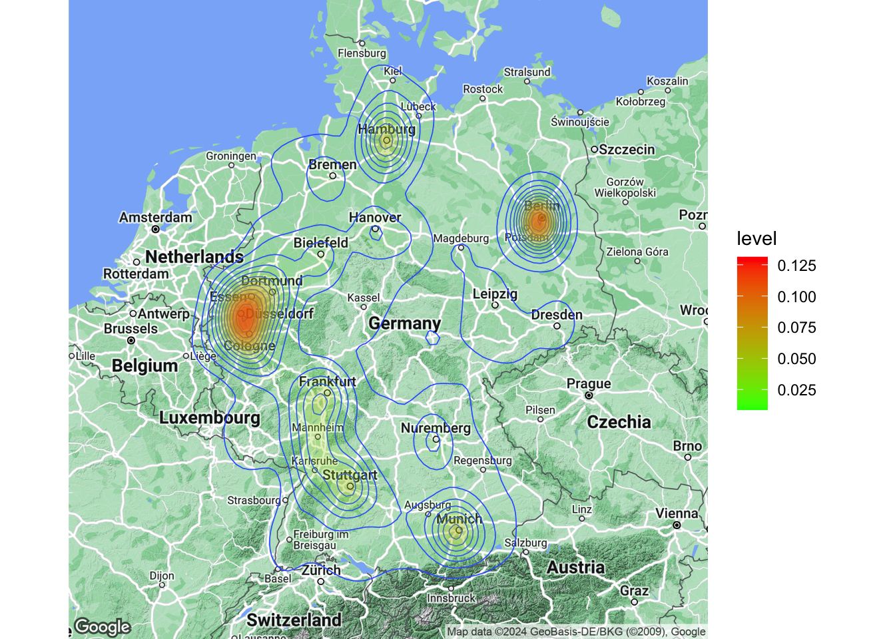
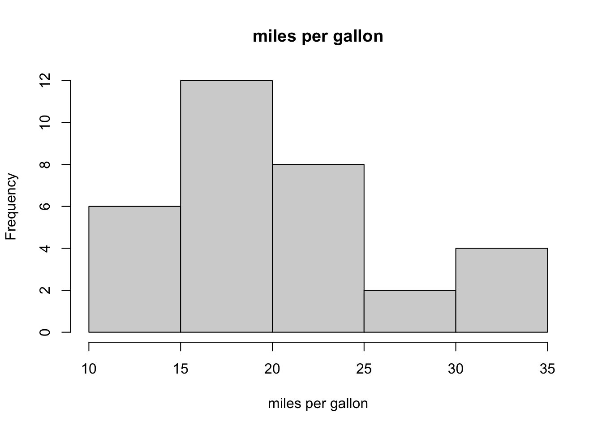
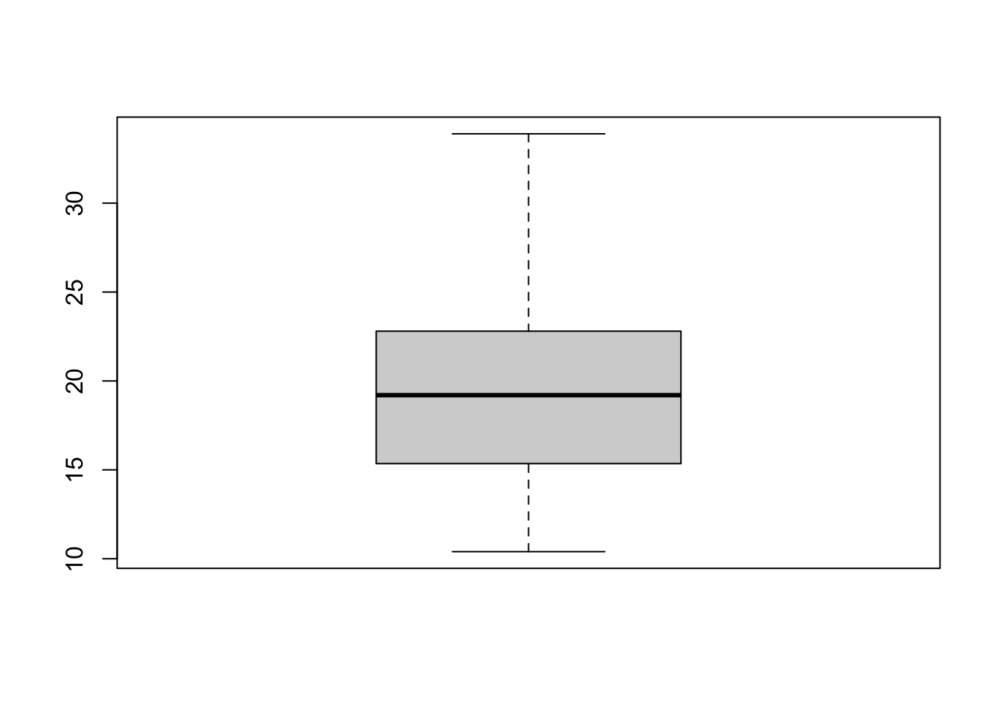

5 Metrics and KPIs in retail
In the dynamic landscape of retail, success hinges on the ability to adapt swiftly to changing consumer behavior, market trends, and competitive landscapes. The emergence of technology and the digital era has given rise to an unprecedented amount of data, providing retailers with the opportunity to gain valuable insights into their operations. To navigate this vast sea of information effectively, it is crucial for retail marketers to employ analytical tools and metrics that not only measure performance but also illuminate areas for improvement.
The primary motivation behind measuring specific Key Performance Indicators (KPIs) in retail analytics lies in the quest for actionable insights. “If you can’t measure it, you can’t manage it” is a controversial yet famous and widely spread quote. Retailers seek to optimize various aspects of their operations, ranging from inventory management to customer engagement, ultimately aiming to enhance the overall customer experience and drive profitability. While there are hundreds of metrics, related to retail business, it is also important to define the range of those that really matter in a particular situation - or even in general. By leveraging relevant metrics, retailers can make informed decisions, identify patterns, and respond proactively to market changes.
This chapter provides an overview of metrics, their area of importance, and relevance.
5.0.5 Finance
The plots we created in the previous chapters used R’s in-built functions. In this section, we will be using the ggplot2 package by Hadley Wickham. It has the advantage of being fairly straightforward to learn and being very flexible when it comes to building more complex plots. For a more in depth discussion you can refer to chapter 4 of the book “Discovering Statistics Using R” by Andy Field et al. or read the following chapter from the book “R for Data science” by Hadley Wickham as well as “R Graphics Cookbook” by Winston Chang.
ggplot2 is built around the idea of constructing plots by stacking layers on top of one another. Every plot starts with the ggplot(data) function, after which layers can be added with the “+” symbol. The following figures show the layered structure of creating plots with ggplot.


5.0.6 Categorical variables
5.0.6.1 Bar plot
To give you an example of how the graphics are composed, let’s go back to the frequency table from the previous chapter, where we created a table showing the relative frequencies of songs in the Austrian streaming charts by genre.
library(tidyverse)
music_data <- read.csv2("https://short.wu.ac.at/ma22_musicdata") |> # pipe music data into mutate
mutate(release_date = as.Date(release_date), # convert to date
explicit = factor(explicit, levels = 0:1, labels = c("not explicit", "explicit")), # convert to factor w. new labels
label = as.factor(label), # convert to factor with values as labels
genre = as.factor(genre),
top10 = as.logical(top10),
# Create an ordered factor for the ratings (e.g., for arranging the data)
expert_rating = factor(expert_rating,
levels = c("poor", "fair", "good", "excellent", "masterpiece"),
ordered = TRUE)
) |>
filter(!is.na(valence))
head(music_data)How can we plot this kind of data? Since we have a categorical variable, we will use a bar plot. However, to be able to use the table for your plot, you first need to assign it to an object as a data frame using the as.data.frame()-function.
table_plot_rel <- as.data.frame(prop.table(table(music_data$genre))) #relative frequencies
head(table_plot_rel)Since Var1 is not a very descriptive name, let’s rename the variable to something more meaningful
Once we have our data set we can begin constructing the plot. As mentioned previously, we start with the ggplot() function, with the argument specifying the data set to be used. Within the function, we further specify the scales to be used using the aesthetics argument, specifying which variable should be plotted on which axis. In our example, we would like to plot the categories on the x-axis (horizontal axis) and the relative frequencies on the y-axis (vertical axis).
Figure 5.1: Bar chart (step 1)
You can see that the coordinate system is empty. This is because so far, we have told R only which variables we would like to plot but we haven’t specified which geometric figures (points, bars, lines, etc.) we would like to use. This is done using the geom_xxx() function. ggplot includes many different geoms, for a wide range of plots (e.g., geom_line, geom_histogram, geom_boxplot, etc.). A good overview of the various geom functions can be found here. In our case, we would like to use a bar chart for which geom_col is appropriate.
Figure 1.5: Bar chart (step 2)
Now we have specified the data, the scales and the shape. Specifying this information is essential for plotting data using ggplot. Everything that follows now just serves the purpose of making the plot look nicer by modifying the appearance of the plot. How about some more meaningful axis labels? We can specify the axis labels using the ylab() and xlab() functions:
Figure 1.6: Bar chart (step 3)
How about adding some value labels to the bars? This can be done using geom_text(). Note that the sprintf() function is not mandatory and is only added to format the numeric labels here. The function takes two arguments: the first specifies the format wrapped in two % signs. Thus, %.0f means to format the value as a fixed point value with no digits after the decimal point, and %% is a literal that prints a “%” sign. The second argument is simply the numeric value to be used. In this case, the relative frequencies multiplied by 100 to obtain the percentage values. Using the vjust = argument, we can adjust the vertical alignment of the label. In this case, we would like to display the label slightly above the bars.
bar_chart + geom_col() + ylab("Relative frequency") +
xlab("Genre") + geom_text(aes(label = sprintf("%.0f%%",
Freq * 100)), vjust = -0.2)Figure 1.7: Bar chart (step 4)
We could go ahead and specify the appearance of every single element of the plot now. However, there are also pre-specified themes that include various formatting steps in one singe function. For example theme_bw() would make the plot appear like this:
bar_chart + geom_col() + ylab("Relative frequency") +
xlab("Genre") + geom_text(aes(label = sprintf("%.1f%%",
Freq/sum(Freq) * 100)), vjust = -0.2) + theme_bw()
Figure 1.8: Bar chart (step 5)
and theme_minimal() looks like this:
bar_chart + geom_col() + ylab("Relative frequency") +
xlab("Genre") + geom_text(aes(label = sprintf("%.1f%%",
Freq/sum(Freq) * 100)), vjust = -0.2) + theme_minimal()Figure 1.9: Bar chart (options 1)
In a next step, let’s prevent the axis labels from overlapping by rotating the labels.
bar_chart + geom_col() + ylab("Relative frequency") +
xlab("Genre") + geom_text(aes(label = sprintf("%.1f%%",
Freq/sum(Freq) * 100)), vjust = -0.2) + theme_minimal() +
theme(axis.text.x = element_text(angle = 45, vjust = 0.75))Figure 1.10: Bar chart (options 1)
We could also add a title and combine all labels using the labs function.
bar_chart + geom_col() + labs(x = "Genre", y = "Relative frequency",
title = "Chart songs by genre") + geom_text(aes(label = sprintf("%.1f%%",
Freq/sum(Freq) * 100)), vjust = -0.2) + theme_minimal() +
theme(axis.text.x = element_text(angle = 45, vjust = 0.75),
plot.title = element_text(hjust = 0.5, color = "#666666"))Figure 1.11: Bar chart (options 1)
We could also add some color to the bars using the colorspace library, which comes with a range of color palettes. For example the shading of the bar could reflect the frequency:
library(colorspace)
bar_chart + geom_col(aes(fill = Freq)) + labs(x = "Genre",
y = "Relative frequency", title = "Chart share by genre") +
geom_text(aes(label = sprintf("%.1f%%", Freq/sum(Freq) *
100)), vjust = -0.2) + theme_minimal() + ylim(0,
0.5) + scale_fill_continuous_sequential(palette = "Blues") +
theme(axis.text.x = element_text(angle = 45, vjust = 0.75),
plot.title = element_text(hjust = 0.5, color = "#666666"),
legend.title = element_blank())Figure 1.12: Bar chart (options 1)
Finally, we can reorder the bars by size using fct_reorder. The first argument to the function is the factor we want to reorder (genre) and the second the variable by which we want to order it (frequency):
bar_chart + geom_col(aes(x = fct_reorder(Genre, Freq),
fill = Freq)) + labs(x = "Genre", y = "Relative frequency",
title = "Chart share by genre") + geom_text(aes(label = sprintf("%.1f%%",
Freq/sum(Freq) * 100)), vjust = -0.2) + theme_minimal() +
ylim(0, 0.5) + scale_fill_continuous_sequential(palette = "Blues") +
theme(axis.text.x = element_text(angle = 45, vjust = 0.75),
plot.title = element_text(hjust = 0.5, color = "#666666"),
legend.title = element_blank())
The default theme in ggplot is theme_classic(). For even more options, check out the ggthemes package, which includes formats for specific publications. You can check out the different themes here. For example theme_economist() uses the formatting of the journal “The Economist”:
library(ggthemes)
bar_chart + geom_col(aes(x = fct_reorder(Genre, Freq))) +
labs(x = "Genre", y = "Relative frequency", title = "Chart songs by genre") +
geom_text(aes(label = sprintf("%.1f%%", Freq/sum(Freq) *
100)), vjust = -0.2) + theme_economist() +
ylim(0, 0.5) + theme(axis.text.x = element_text(angle = 45,
vjust = 0.55), plot.title = element_text(hjust = 0.5,
color = "#666666"))Figure 5.2: Bar chart (options 2)
There are various similar packages with pre-specified themes, like the ggthemr package, the ggtech package, the rockthemes package, or the tvthemes package.
In a next step, we might want to investigate whether the relative frequencies differ between songs with explicit and song without explicit lyrics. For this purpose we first construct the conditional relative frequency table from the previous chapter again. Recall that the latter gives us the relative frequency within a group (in our case genres), as compared to the relative frequency within the entire sample.
table_plot_cond_rel <- as.data.frame(prop.table(table(select(music_data,
genre, explicit)), 2)) #conditional relative frequencies
table_plot_cond_relWe can now take these tables to construct plots grouped by explicitness. To achieve this we simply need to add the facet_wrap() function, which replicates a plot multiple times, split by a specified grouping factor. Note that the grouping factor has to be supplied in R’s formula notation, hence it is preceded by a “~” symbol.
ggplot(table_plot_cond_rel, aes(x = fct_reorder(genre,
Freq), y = Freq)) + geom_col(aes(fill = Freq)) +
facet_wrap(~explicit) + labs(x = "", y = "Relative frequency",
title = "Distribution of genres for explicit and non-explicit songs") +
geom_text(aes(label = sprintf("%.0f%%", Freq *
100)), vjust = -0.2) + theme_minimal() + ylim(0,
1) + scale_fill_continuous_sequential(palette = "Blues") +
theme(axis.text.x = element_text(angle = 45, vjust = 1.1,
hjust = 1), plot.title = element_text(hjust = 0.5,
color = "#666666"), legend.position = "none")Figure 1.15: Grouped bar chart (facet_wrap)
Alternatively, we might be interested to investigate the relative frequencies of explicit and non-explicit lyrics for each genre. To achieve this, we can also use the fill argument, which tells ggplot to fill the bars by a specified variable (in our case “explicit”). The position = “dodge” argument causes the bars to be displayed next to each other (as opposed to stacked on top of one another).
table_plot_cond_rel_1 <- as.data.frame(prop.table(table(select(music_data, genre, explicit)),1)) #conditional relative frequencies
ggplot(table_plot_cond_rel_1, aes(x = genre, y = Freq, fill = explicit)) + #use "fill" argument for different colors
geom_col(position = "dodge") + #use "dodge" to display bars next to each other (instead of stacked on top)
geom_text(aes(label = sprintf("%.0f%%", Freq * 100)),position=position_dodge(width=0.9), vjust=-0.25) +
scale_fill_discrete_qualitative(palette = "Dynamic") +
labs(x = "Genre", y = "Relative frequency", title = "Explicit lyrics share by genre") +
theme_minimal() +
theme(axis.text.x = element_text(angle=45,vjust=1.1,hjust=1),
plot.title = element_text(hjust = 0.5,color = "#666666"),
legend.position = "none"
) Figure 1.16: Grouped bar chart (fill)
5.0.7 Continuous variables
5.0.7.1 Histogram
Histograms can be created for continuous data using the geom_histogram() function. Note that the aes() function only needs one argument here, since a histogram is a plot of the distribution of only one variable. As an example, let’s consider our data set containing the music data:
Now we can create the histogram using geom_histogram(). The argument binwidth specifies the range that each bar spans, col = "black" specifies the border to be black and fill = "darkblue" sets the inner color of the bars to dark blue. For brevity, we have now also started naming the x and y axis with the single function labs(), instead of using the two distinct functions xlab() and ylab(). Let’s look at the distribution of streams of R&B songs:
music_data |>
filter(genre == "R&B") |>
ggplot(aes(streams)) + geom_histogram(binwidth = 20000000,
col = "black", fill = "darkblue") + labs(x = "Number of streams",
y = "Frequency", title = "Distribution of streams") +
theme_bw()Figure 1.18: Histogram
If you would like to highlight certain points of the distribution, you can use the geom_vline (short for vertical line) function to do this. For example, we may want to highlight the mean and the median of the distribution.
music_data |>
filter(genre == "R&B") |>
ggplot(aes(streams)) + geom_histogram(binwidth = 20000000,
col = "black", fill = "darkblue") + labs(x = "Number of streams",
y = "Frequency", title = "Distribution of streams",
subtitle = "Red vertical line = mean, green vertical line = median") +
geom_vline(aes(xintercept = mean(streams)), color = "red",
size = 1) + geom_vline(aes(xintercept = median(streams)),
color = "green", size = 1) + theme_bw()Figure 1.19: Histogram 2
In this case, you should indicate what the lines refer to. In the plot above, the ‘subtitle’ argument was used to add this information to the plot.
Note the difference between a bar chart and the histogram. While a bar chart is used to visualize the frequency of observations for categorical variables, the histogram shows the frequency distribution for continuous variables.
5.0.7.2 Boxplot
Another common way to display the distribution of continuous variables is through boxplots. ggplot will construct a boxplot if given the geom geom_boxplot(). In our case we might want to show the difference in streams between the genres. For this analysis, we will transform the streaming variable using a logarithmic transformation, which is common with such data (as we will see later). So let’s first create a new variable by taking the logarithm of the streams variable.
Now, let’s create a boxplot based on these variables and plot the log-transformed number of streams by genre.
ggplot(music_data, aes(x = fct_reorder(genre, log_streams),
y = log_streams)) + geom_boxplot(coef = 3) + labs(x = "Genre",
y = "Number of streams (log-scale)") + theme_minimal() +
theme(axis.text.x = element_text(angle = 45, vjust = 1.1,
hjust = 1), plot.title = element_text(hjust = 0.5,
color = "#666666"), legend.position = "none")Figure 1.21: Boxplot by group
The following graphic shows you how to interpret the boxplot:

Note that you could also flip the boxplot. To do this, you only need to exchange the x- and y-variables. If we provide the categorical variable to the y-axis as follows, the axis will be flipped.
ggplot(music_data, aes(x = log_streams, y = fct_reorder(genre,
log_streams))) + geom_boxplot(coef = 3) + labs(x = "Number of streams (log-scale)",
y = "Genre") + theme_minimal() + theme(plot.title = element_text(hjust = 0.5,
color = "#666666"), legend.position = "none")Figure 1.22: Boxplot by group
It is often meaningful to augment the boxplot with the data points using geom_jitter(). This way, differences in the distribution of the variable between the genres become even more apparent.
ggplot(music_data, aes(x = log_streams, y = fct_reorder(genre,
log_streams))) + geom_jitter(colour = "red", alpha = 0.1) +
geom_boxplot(coef = 3, alpha = 0.1) + labs(x = "Number of streams (log-scale)",
y = "Genre") + theme_minimal()Figure 1.23: Boxplot by group
In case you would like to create the boxplot on the total data (i.e., not by group), just leave the y = argument within the aes() function empty:
ggplot(music_data, aes(x = log_streams, y = "")) +
geom_boxplot(coef = 3, width = 0.3) + labs(x = "Number of streams (log-scale)",
y = "")Figure 1.24: Single Boxplot
5.0.7.3 Plot of means
Another way to get an overview of the difference between two groups is to plot their respective means with confidence intervals. The mean and confidence intervals will enter the plot separately, using the geoms geom_bar() and geom_errorbar(). Don’t worry if you don’t know exactly how to interpret the confidence interval at this stage - we will cover this topic in the next chapter. Let’s assume we would like to plot the difference in streams between the HipHop & Rap genre and all other genres. For this, we first need to create a dummy variable (i.e., a categorical variable with two levels) that indicates if a song is from the HipHop & Rap genre or from any of the other genres. We can use the ifelse() function to do this, which takes 3 arguments, namely 1) the if-statement, 2) the returned value if this if-statement is true, and 3) the value if the if-statement is not true.
music_data$genre_dummy <- as.factor(ifelse(music_data$genre ==
"HipHop/Rap", "HipHop & Rap", "other"))To make plotting the desired comparison easier, we can compute all relevant statistics first, using the summarySE() function from the Rmisc package.
library(Rmisc)
mean_data <- summarySE(music_data, measurevar = "streams",
groupvars = c("genre_dummy"))
mean_dataThe output tells you how many observations there are per group, the mean number of streams per group, as well as the group-specific standard deviation, the standard error, and the confidence interval (more on this in the next chapter). You can now create the plot as follows:
ggplot(mean_data, aes(x = genre_dummy, y = streams)) +
geom_bar(position = position_dodge(0.9), colour = "black",
fill = "#CCCCCC", stat = "identity", width = 0.65) +
geom_errorbar(position = position_dodge(0.9), width = 0.15,
aes(ymin = streams - ci, ymax = streams + ci)) +
theme_bw() + labs(x = "Genre", y = "Average number of streams",
title = "Average number of streams by genre") +
theme_bw() + theme(plot.title = element_text(hjust = 0.5,
color = "#666666"))Figure 5.3: Plot of means
As can be seen, there is a large difference between the genres with respect to the average number of streams.
5.0.7.4 Grouped plot of means
We might also be interested to investigate a second factor. Say, we would like to find out if there is a difference between genres with respect to the lyrics (i.e., whether the lyrics are explicit or not). Can we find evidence that explicit lyrics affect streams of songs from the HipHop & Rap genre differently compared to other genres. We can compute the statistics using the summarySE() function by simply adding the second variable to the ‘groupvars’ argument.
mean_data2 <- summarySE(music_data, measurevar = "streams",
groupvars = c("genre_dummy", "explicit"))
mean_data2Now we obtained the results for four different groups (2 genres x 2 lyric types) and we can amend the plot easily by adding the ‘fill’ argument to the ggplot() function. The scale_fill_manual() function is optional and specifies the color of the bars manually.
ggplot(mean_data2, aes(x = genre_dummy, y = streams,
fill = explicit)) + geom_bar(position = position_dodge(0.9),
colour = "black", stat = "identity") + geom_errorbar(position = position_dodge(0.9),
width = 0.2, aes(ymin = streams - ci, ymax = streams +
ci)) + scale_fill_manual(values = c("#CCCCCC",
"#FFFFFF")) + theme_bw() + labs(x = "Genre", y = "Average number of streams",
title = "Average number of streams by genre and lyric type") +
theme_bw() + theme(plot.title = element_text(hjust = 0.5,
color = "#666666"))Figure 5.4: Grouped plot of means
The results of the analysis show that also in the HipHop & Rap genre, songs with non-explicit lyrics obtain more streams on average, contrary to our expectations.
5.0.7.5 Scatter plot
The most common way to show the relationship between two continuous variables is a scatterplot. As an example, let’s investigate if there is an association between the number of streams a song receives and the speechiness of the song. The following code creates a scatterplot with some additional components. The geom_smooth() function creates a smoothed line from the data provided. In this particular example we tell the function to draw the best possible straight line (i.e., minimizing the distance between the line and the points) through the data (via the argument method = "lm"). Note that the “shape = 1” argument passed to the geom_point() function produces hollow circles (instead of solid) and the “fill” and “alpha” arguments passed to the geom_smooth() function specify the color and the opacity of the confidence interval, respectively.
ggplot(music_data, aes(speechiness, log_streams)) +
geom_point(shape = 1) + labs(x = "Genre", y = "Relative frequency") +
geom_smooth(method = "lm", fill = "blue", alpha = 0.1) +
labs(x = "Speechiness", y = "Number of streams (log-scale)",
title = "Scatterplot of streams and speechiness") +
theme_bw() + theme(plot.title = element_text(hjust = 0.5,
color = "#666666"))Figure 4.2: Scatter plot
As you can see, there appears to be a positive relationship between advertising and sales.
5.0.7.5.1 Grouped scatter plot
It could be that customers from different store respond differently to advertising. We can visually capture such differences with a grouped scatter plot. By adding the argument colour = store to the aesthetic specification, ggplot automatically treats the two stores as distinct groups and plots accordingly.
ggplot(music_data, aes(speechiness, log_streams, colour = explicit)) +
geom_point(shape = 1) + geom_smooth(method = "lm",
alpha = 0.1) + labs(x = "Speechiness", y = "Number of streams (log-scale)",
title = "Scatterplot of streams and speechiness by lyric type",
colour = "Explicit") + scale_color_manual(values = c("lightblue",
"darkblue")) + theme_bw() + theme(plot.title = element_text(hjust = 0.5,
color = "#666666"))Figure 4.3: Grouped scatter plot
It appears from the plot that the association between speechiness and the number of streams is stronger for songs without explicit lyrics.
5.0.7.6 Line plot
Another important type of plot is the line plot used if, for example, you have a variable that changes over time and you want to plot how it develops over time. To demonstrate this we will investigate a data set that show the development of the number of streams of the Top200 songs on a popular music streaming service for different region. Let’s investigate the data first and bring all variables to the correct format.
music_data_ctry <- read.table("https://raw.githubusercontent.com/IMSMWU/Teaching/master/MRDA2017/streaming_charts_ctry.csv",
sep = ",", header = TRUE) |>
mutate(week = as.Date(week), region = as.factor(region))
head(music_data_ctry)In a first step, let’s investigate the development for Austria, by filtering the data to region ‘at’.
Given the correct aes() and geom specification ggplot constructs the correct plot for us. In order to make large numbers more readable we use the label_comma function from the scales package in the scale_y_continuous layer.
ggplot(music_data_at, aes(x = week, y = streams)) +
geom_line() + labs(x = "", y = "Total streams in Austria",
title = "Weekly number of streams in Austria") +
theme_bw() + scale_y_continuous(labels = scales::label_comma()) +
theme(plot.title = element_text(hjust = 0.5, color = "#666666"))Figure 5.5: Line plot
There appears to be a positive trend in the market. Now let’s compare Austria to other countries. Note that the %in% operator checks for us if any of the region names specified in the vector are included in the region column.
We can now include the other specified countries in the plot by using the ‘color’ argument.
ggplot(music_data_at_compare, aes(x = week, y = streams,
color = region)) + geom_line() + labs(x = "Week",
y = "Total streams", title = "Weekly number of streams by country") +
theme_bw() + theme(plot.title = element_text(hjust = 0.5,
color = "#666666")) + scale_y_continuous(labels = scales::label_comma())Figure 5.6: Line plot (by region)
One issue in plot like this can be that the scales between countries is very different (i.e., in Germany there are many more streams because Germany is larger than the other countries). You could also use the facet_wrap() function to create one individual plot by region and specify ‘scales = “free_y”’ so that each individual plot has its own scale on the y-axis. We should also indicate the number of streams in millions by dividing the number of streams.
ggplot(music_data_at_compare, aes(x = week, y = streams/1000000)) +
geom_line() + facet_wrap(~region, scales = "free_y") +
labs(x = "Week", y = "Total streams (in million)",
title = "Weekly number of streams by country") +
theme_bw() + theme(plot.title = element_text(hjust = 0.5,
color = "#666666"))Figure 4.6: Line plot (facet wrap)
Now it’s easier to see that the trends are different between countries. While Sweden and Denmark appear to be saturated, the other market show strong growth.
5.0.7.7 Area plots
A slightly different way to plot this data is through area plot using the geom_area() function.
ggplot(music_data_at_compare, aes(x = week, y = streams/1000000)) +
geom_area(fill = "steelblue", color = "steelblue",
alpha = 0.5) + facet_wrap(~region, scales = "free_y") +
labs(x = "Week", y = "Total streams (in million)",
title = "Weekly number of streams by country") +
theme_bw() + theme(plot.title = element_text(hjust = 0.5,
color = "#666666"))Figure 4.7: Line plot (facet wrap)
If the relative share of the overall streaming volume is of interest, you could use a stacked area plot to visualize this.
ggplot(music_data_at_compare, aes(x = week, y = streams/1000000,
group = region, fill = region, color = region)) +
geom_area(position = "stack", alpha = 0.65) + labs(x = "Week",
y = "Total streams (in million)", title = "Weekly number of streams by country") +
theme_bw() + theme(plot.title = element_text(hjust = 0.5,
color = "#666666"))Figure 4.8: Line plot (facet wrap)
In this type of plot it is easy to spot the relative size of the regions.
In some cases it could also make sense to add a secondary y-axis, for example, if you would like to compare two regions with very different scales in one plot. Let’s assume, we would like to compare Austria and Sweden and take the corresponding subset.
In order to add the secondary y-axis, we need the data in a slightly different format where we have one column for each country. This is called the ‘wide format’ as opposed to the ‘long format’ where the data is stacked on top of each other for all regions. We can easily convert the data to the wide format by using the pivot_wider() function from the tidyr package.
library(tidyr)
data_wide <- pivot_wider(music_data_at_se_compare,
names_from = region, values_from = streams)
data_wideAs another intermediate step, we need to compute the ratio between the two variables we would like to plot on the two axis, since the scale of the second axis is determined based on the ratio with the other variable.
Now we can create the plot with the secondary y-axis as follows:
ggplot(data_wide) + geom_area(aes(x = week, y = at/1000000,
colour = "Austria", fill = "Austria"), alpha = 0.5) +
geom_area(aes(x = week, y = (se/1000000) * ratio,
colour = "Sweden", fill = "Sweden"), alpha = 0.5) +
scale_y_continuous(sec.axis = sec_axis(~./ratio,
name = "Total streams SE (in million)")) +
scale_fill_manual(values = c("#999999", "#E69F00")) +
scale_colour_manual(values = c("#999999", "#E69F00"),
guide = FALSE) + theme_minimal() + labs(x = "Week",
y = "Total streams AT (in million)", title = "Weekly number of streams by country") +
theme(plot.title = element_text(hjust = 0.5, color = "#666666"),
legend.title = element_blank(), legend.position = "bottom")Figure 5.7: Secondary y-axis
In this plot it is easy to see the difference in trends between the countries.
5.0.8 Saving plots
To save the last displayed plot, simply use the function ggsave(), and it will save the plot to your working directory. Use the arguments heightand width to specify the size of the file. You may also choose the file format by adjusting the ending of the file name. E.g., file_name.jpg will create a file in JPG-format, whereas file_name.png saves the file in PNG-format, etc..
5.0.9 ggplot extensions
As the ggplot2 package became more and more popular over the past years, more and more extensions have been developed by users that can be used for specific purposes that are not yet covered by the standard functionality of ggplot2. You can find a list of the extensions here. Below, you can find some example for the additional options.
5.0.9.1 Results of statistical tests (ggstatsplot)
You may use the ggstatplot package to augment your plots with the results from statistical tests, such as an ANOVA. You can find a presentation about the capabilities of this package here. The boxplot below shows an example.
library(ggstatsplot)
music_data_subs <- filter(music_data, genre %in% c("HipHop/Rap", "Soundtrack","Pop","Rock"))
ggbetweenstats(
data = music_data_subs,
title = "Number of streams by genre", # title for the plot
plot.type = "box",
x = genre, # 4 groups
y = log_streams,
type = "p", # default
messages = FALSE,
bf.message = FALSE,
pairwise.comparisons = TRUE # display results from pairwise comparisons
)Figure 5.8: Boxplot using ggstatsplot package
5.0.9.1.1 Combination of plots (ggExtra)
Using the ggExtra() package, you may combine two type of plots. For example, the following plot combines a scatterplot with a histogram:
library(ggExtra)
p <- ggplot(music_data, aes(x = speechiness, y = log_streams)) +
geom_point() + labs(x = "Speechiness", y = "Number of streams (log-scale)",
title = "Scatterplot & histograms of streams and speechiness") +
theme_bw() + theme(plot.title = element_text(hjust = 0.5,
color = "#666666"))
ggExtra::ggMarginal(p, type = "histogram")Figure 4.11: Scatter plot with histogram
In this case, the type = "histogram" argument specifies that we would like to plot a histogram. However, you could also opt for type = "boxplot" or type = "density" to use a boxplot or density plot instead.
5.0.9.2 Appendix
5.0.9.2.1 Covariation plots
To visualize the co-variation between categorical variables, you’ll need to count the number of observations for each combination stored in the frequency table. Say, we wanted to investigate the association between the popularity of a song and the level of ‘speechiness’. For this exercise, let’s assume we have both variables measured as categorical (factor) variables. We can use the quantcut() function to create categorical variables based on the continuous variables. All we need to do is tell the function how many categories we would like to obtain and it will divide the data based on the percentiles equally.
library(gtools)
music_data$streams_cat <- as.numeric(quantcut(music_data$streams,
5, na.rm = TRUE))
music_data$speech_cat <- as.numeric(quantcut(music_data$speechiness,
3, na.rm = TRUE))
music_data$streams_cat <- factor(music_data$streams_cat,
levels = 1:5, labels = c("low", "low-med", "medium",
"med-high", "high")) #convert to factor
music_data$speech_cat <- factor(music_data$speech_cat,
levels = 1:3, labels = c("low", "medium", "high")) #convert to factorNow we have multiple ways to visualize a relationship between the two variables with ggplot. One option would be to use a variation of the scatterplot which counts how many points overlap at any given point and increases the dot size accordingly. This can be achieved with geom_count() as the example below shows where the stat(prop) argument assures that we get relative frequencies and with the group argument we tell R to compute the relative frequencies by speechiness.
ggplot(data = music_data) + geom_count(aes(x = speech_cat,
y = streams_cat, size = stat(prop), group = speech_cat)) +
ylab("Popularity") + xlab("Speechiness") + labs(size = "Proportion") +
theme_bw()Figure 5.9: Covariation between categorical data (1)
The plot shows that there appears to be a positive association between the popularity of a song and its level of speechiness.
Another option would be to use a tile plot that changes the color of the tile based on the frequency of the combination of factors. To achieve this, we first have to create a dataframe that contains the relative frequencies of all combinations of factors. Then we can take this dataframe and pass it to geom_tile(), while specifying that the fill of each tile should be dependent on the observed frequency of the factor combination, which is done by specifying the fill in the aes() function.
table_plot_rel <- prop.table(table(music_data[, c("speech_cat",
"streams_cat")]), 1)
table_plot_rel <- as.data.frame(table_plot_rel)
ggplot(table_plot_rel, aes(x = speech_cat, y = streams_cat)) +
geom_tile(aes(fill = Freq)) + ylab("Populartiy") +
xlab("Speechiness") + theme_bw()Figure 4.13: Covariation between categorical data (2)
5.0.9.2.2 Location data (ggmap)
Now that we have covered the most important plots, we can look at what other type of data you may come across. One type of data that is increasingly available is the geo-location of customers and users (e.g., from app usage data). The following data set contains the app usage data of Shazam users from Germany. The data contains the latitude and longitude information where a music track was “shazamed”.
library(ggmap)
library(dplyr)
geo_data <- read.table("https://raw.githubusercontent.com/IMSMWU/Teaching/master/MRDA2017/geo_data.dat",
sep = "\t", header = TRUE)
head(geo_data)There is a package called “ggmap”, which is an augmentation for the ggplot packages. It lets you load maps from different web services (e.g., Google maps) and maps the user location within the coordination system of ggplot. With this information, you can create interesting plots like heat maps. We won’t go into detail here but you may go through the following code on your own if you are interested. However, please note that you need to register an API with Google in order to make use of this package.
# register_google(key = 'your_api_key')
# Download the base map
de_map_g_str <- get_map(location = c(10.018343, 51.133481),
zoom = 6, scale = 2) # results in below map (wohoo!)
# Draw the heat map
ggmap(de_map_g_str, extent = "device") + geom_density2d(data = geo_data,
aes(x = lon, y = lat), size = 0.3) + stat_density2d(data = geo_data,
aes(x = lon, y = lat, fill = ..level.., alpha = ..level..),
size = 0.01, bins = 16, geom = "polygon") + scale_fill_gradient(low = "green",
high = "red") + scale_alpha(range = c(0, 0.3),
guide = FALSE)
Learning check
(LC4.1) For which data types is it meaningful to compute the mean?
(LC4.2) How can you compute the standardized variate of a variable X?
You wish to analyze the following data frame ‘df’ containing information about cars
(LC4.3) How could you add a new variable containing the z-scores of the variable ‘mpg’ in R?
(LC4.4) How could you produce the below output?
(LC4.5) The last column “carb” indicates the number of carburetors each model has. By using a function we got to know the number of car models that have a certain number carburetors. Which function helped us to obtain this information?
##
## 1 2 3 4 6 8
## 7 10 3 10 1 1(LC4.6) What type of data can be meaningfully depicted in a scatter plot?
(LC4.7) Which statement about the graph below is true?

(LC4.8) Which statement about the graph below is true?

(LC4.9) Which function can help you to save a graph made with ggplot()?
(LC4.10) For a variable that follows a normal distribution, within how many standard deviations of the mean are 95% of values?
References
- Field, A., Miles J., & Field, Z. (2012). Discovering Statistics Using R. Sage Publications.
- Chang, W. (2020). R Graphics Cookbook, 2nd edition (https://r-graphics.org/)
- Grolemund, G. & Wickham, H. (2020). R for Data Science (https://r4ds.had.co.nz/)